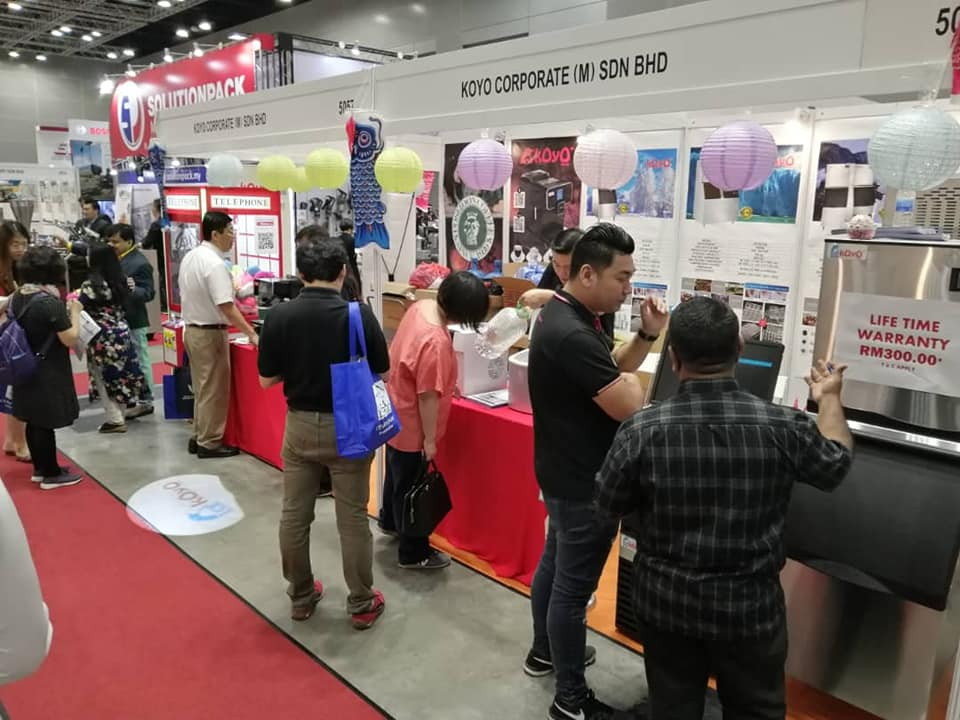

As the food and beverage industry moves toward smarter and more agile logistics solutions, businesses across Southeast Asia are preparing for major industry showcases. This evolution will be fully visible at the upcoming Kuala Lumpur F&B trade fair 2026, where thousands of businesses will gather to source the latest technologies in preservation, supply chain management, and food safety.
Among the crucial logistics infrastructure on display, advanced refrigeration engineering like the KOYO portable cold room is taking center stage. For businesses handling temperature-sensitive inventory during large-scale exhibitions or seasonal demand spikes, choosing the right infrastructure is a make-or-break operational decision.

Navigating Logistics for the Kuala Lumpur F&B Trade Fair 2026
Exhibiting food products, fresh ingredients, and premium beverages at a massive venue like the Kuala Lumpur Convention Centre presents immense cold chain challenges. Keeping goods at precise temperature levels requires highly reliable commercial mobile cold storage units that can function perfectly without fluctuations.
With the official MIFB 2026 dates locked in for July 15 to July 17, savvy business owners and logistics operators are already mapping out their storage capabilities well in advance. During these intensive three days of trading, networking, and live cooking demonstrations, massive volumes of perishable stock must remain immaculately preserved. Relying on standard, fixed refrigerators is rarely enough for high-volume operators, driving a significant surge in demand for strategic cold room rental Malaysia programs.
The Advantage of the KOYO Portable Cold Room
For brands looking to optimize their setups during the Kuala Lumpur F&B trade fair 2026, a KOYO portable cold room offers the ultimate balance of mobility and heavy-duty cooling power. Known for fast-cooling industrial compressors and weather-proof insulation panels, these units ensure that seafood, meat, dairy, and fresh produce are kept completely safe from ambient temperature fluctuations.

Key advantages of deploying these mobile solutions include:
- Tailored Space Configurations: Units like the compact PCR10 (7ft × 6ft × 8ft) fit efficiently into tighter event operational zones, while larger sizes handle heavy pallet storage.
- Precise Digital Monitoring: Built-in smart control systems let operators track exact temperature levels to guarantee strict food safety compliance.
- High Performance Infrastructure: Heavy-duty build quality allows for consistent cooling, even when doors are frequently opened and closed during busy exhibition hours.
Securing Reliable Cold Storage Solutions Ahead of Time
With more than 13,000 global trade visitors expected to flock to the city when the MIFB 2026 dates arrive, local logistics networks will be running at absolute capacity. Securing top-tier commercial mobile cold storage before the rush ensures your business operations can run without unexpected supply bottlenecks.
By leveraging premium cold room rental Malaysia alternatives, businesses can easily scale up their storage footprints without facing massive upfront capital investments. Whether you are expanding your restaurant's capacity, managing high-volume catering contracts, or setting up a major showcase at the Kuala Lumpur F&B trade fair 2026, a dedicated KOYO portable cold room keeps your inventory locked at peak freshness exactly when the spotlight hits.